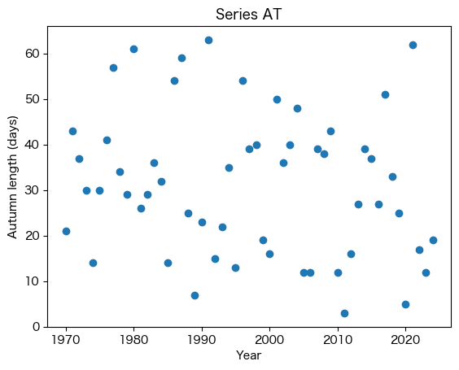
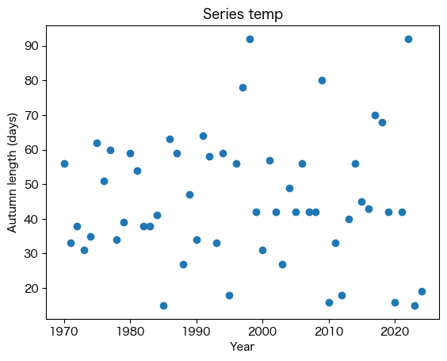
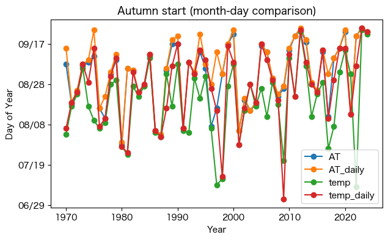

%load_ext autoreload
%autoreload 2
from meteo_lib import PROJECT # または: from meteo_lib.paths import PROJECT
#out_dir = PROJECT / "outputs"
from meteo_lib.meteo_lib import getBlock, get_HourlyData, get_10minData
from meteo_lib.my_path_utils import DATA, OUT
import pandas as pd
import math
import numpy as np
from datetime import datetime, timedelta, date, time
from metpy.units import units
from metpy.calc import dewpoint_from_relative_humidity
import matplotlib.pyplot as plt
import matplotlib as mpl
mpl.rcParams["font.family"] = "Hiragino Sans" # 例：Noto Sans CJK JP でも可
mpl.rcParams["axes.unicode_minus"] = False # －が豆腐になるのを回避
import matplotlib.dates as mdates
import matplotlib.gridspec as gridspec
from matplotlib.ticker import FuncFormatter, MultipleLocator
import os
from pathlib import Path
import calendar
from IPython.display import display # 移動平均：5日 持続窓：7日 多数決：5/7 快適帯：18℃ ≤ AT ≤ 24℃
# 秋入り：24℃以下 秋明け：18℃未満
def _first_true_in_window(flag_window: pd.Series):
"""window内で最初にTrueになった日付を返す（なければNone）"""
idx = flag_window.index[flag_window.to_numpy()]
return idx[0] if len(idx) else None
def _find_event_by_majority_on_daily(
flag: pd.Series,
window: int,
majority: int,
start_date: pd.Timestamp | None = None,
end_date: pd.Timestamp | None = None,
):
"""
flag: 日次（D）のbool Series（indexは連続日付であること）
window日間のうち majority日以上 True なら成立。
成立したら、その成立窓の中で最初にTrueになった日を返す。
"""
f = flag.copy()
if start_date is not None:
f = f.loc[start_date:]
if end_date is not None:
f = f.loc[:end_date]
if len(f) < window:
return None
arr = f.to_numpy(dtype=bool)
# 7日多数決（rolling sum）
roll = pd.Series(arr.astype(int), index=f.index).rolling(window, min_periods=window).sum()
hit = roll >= majority
if not hit.any():
return None
d_star = hit.idxmax() # 最初に成立した日（rollingの右端日）
win = f.loc[d_star - pd.Timedelta(days=window-1) : d_star]
return _first_true_in_window(win)
def _end_of_month(year: int, month: int) -> pd.Timestamp:
"""その月の月末日（Timestamp）"""
return (pd.Timestamp(year, month, 1) + pd.offsets.MonthEnd(0))
def _make_year_span(start: pd.Timestamp, end_month: int) -> tuple[pd.Timestamp, pd.Timestamp]:
"""
start日から、(startの年/翌年)のend_month末までの期間を返す。
end_monthが start.month より小さいなら翌年のend_monthまで。
例：start=2020-09-15, end_month=2 -> 2021-02-28(末)
"""
y0 = start.year
y1 = y0 + (1 if end_month < start.month else 0)
end_dt = _end_of_month(y1, end_month)
return start, end_dt
def find_autumn_periods_multi(
csv_path: str,
cols=("AT", "AT_daily", "temp", "temp_daily"),
date_col="日時",
ma_days=5,
window=7,
majority=5,
th_hi=24.0,
th_lo=18.0,
# 探索制限（任意）
use_peak_after=True, # ★秋入り探索を「夏ピーク後」に限定（推奨）
peak_search_months=(6, 9),# 夏ピーク探索範囲（月）。例：6-9月の最大をピークとみなす
start_month_hi=7, # 秋入り探索の月制限（任意で併用）
end_month_hi=12,
end_month_lo=2, # 秋明け探索は翌年2月末まで等
min_gap_days_after_peak=0,# ピーク直後のノイズ回避（例：7日など）
# デバッグ列を返すか
return_debug=False,
):
"""
各年・各系列について：
- MA(5日)を作る
- 秋入り：MA <= th_hi を (window日中 majority日) で成立、ただし原則「夏ピーク後」から探索
- 秋明け：MA < th_lo を (window日中 majority日) で成立（秋入り後〜翌年end_month_lo末）
"""
df_raw = pd.read_csv(csv_path, parse_dates=[date_col]).set_index(date_col).sort_index()
# 連続日付の骨格（欠測があっても窓の定義が崩れない）
full_index = pd.date_range(df_raw.index.min(), df_raw.index.max(), freq="D")
df_raw = df_raw.reindex(full_index)
years = sorted(pd.Index(full_index.year).unique())
out_rows = []
debug_store = {} # {col: df_debug}
for col in cols:
if col not in df_raw.columns:
raise KeyError(f"column '{col}' not found in CSV")
s = df_raw[col].astype(float)
# 移動平均（端はNaN、欠測もNaNのまま）
ma = s.rolling(ma_days, min_periods=ma_days).mean()
# True/Falseフラグ：NaNはFalse扱い（多数決で不利＝データ不足）
cool = (ma <= th_hi).fillna(False)
cold = (ma < th_lo).fillna(False)
# --- デバッグ用：1970年9月の中身を確認 ---
#check = pd.DataFrame({
# "value": s,
# "MA": ma,
# "cool": cool,
# "cold": cold,
# "roll7_cold": cold.astype(int).rolling(7, min_periods=7).sum(),
#}, index=full_index)
#print(f"\n=== DEBUG series={col} ===")
#print(check.loc["1970-09-20":"1970-09-30"])
if return_debug:
debug_store[col] = pd.DataFrame({"value": s, "MA": ma, "cool": cool, "cold": cold}, index=full_index)
for y in years:
year_start = pd.Timestamp(y, 1, 1)
year_end = pd.Timestamp(y, 12, 31)
# その年の範囲に切り出し（秋入り探索対象）
ma_y = ma.loc[year_start:year_end]
cool_y = cool.loc[year_start:year_end]
# --- 秋入り探索の開始点を決める ---
start_search = pd.Timestamp(y, start_month_hi, 1)
end_search = _end_of_month(y, end_month_hi)
# まず月制限（任意。冬誤検出を抑える最低限のガード）
cool_search = cool_y.loc[start_search:end_search]
# さらに「夏ピーク後」に限定（これが冬/春誤検出を根絶）
if use_peak_after:
pm0, pm1 = peak_search_months
peak_start = pd.Timestamp(y, pm0, 1)
peak_end = _end_of_month(y, pm1)
ma_peak = ma_y.loc[peak_start:peak_end].dropna()
if ma_peak.empty:
autumn_start = None
else:
t_peak = ma_peak.idxmax()
t0 = t_peak + pd.Timedelta(days=min_gap_days_after_peak)
# ピーク後かつ月制限内
t0 = max(t0, start_search)
cool_search2 = cool_y.loc[t0:end_search]
autumn_start = _find_event_by_majority_on_daily(
cool_search2, window=window, majority=majority
)
else:
autumn_start = _find_event_by_majority_on_daily(
cool_search, window=window, majority=majority
)
# 秋入りが見つからない年
if autumn_start is None:
out_rows.append({
"year": y, "series": col,
"autumn_start": pd.NaT, "autumn_end": pd.NaT,
"length_days": np.nan
})
continue
# --- 秋明け探索（秋入り以降〜翌年end_month_lo末） ---
span_start, span_end = _make_year_span(autumn_start, end_month=end_month_lo)
cold_span = cold.loc[span_start:span_end]
autumn_end = _find_event_by_majority_on_daily(
cold_span, window=window, majority=majority
)
length = (autumn_end - autumn_start).days + 1 if pd.notna(autumn_end) else np.nan
out_rows.append({
"year": y, "series": col,
"autumn_start": autumn_start,
"autumn_end": autumn_end,
"length_days": length
})
out = pd.DataFrame(out_rows).sort_values(["series", "year"]).reset_index(drop=True)
# 横持ち（seriesごとに列化）したいならピボット
out_wide = (out.pivot(index="year", columns="series", values=["autumn_start", "autumn_end", "length_days"])
.sort_index())
if return_debug:
return out, out_wide, debug_store
return out, out_widecsv_path = DATA / "AT_仙台_1970-2024.csv"
try:
out_long, out_wide = find_autumn_periods_multi(
csv_path,
cols=("AT", "AT_daily", "temp", "temp_daily"),
th_hi=24, th_lo=18,
ma_days=5, window=7, majority=5,
use_peak_after=True, # ★重要：ピーク後探索
peak_search_months=(6, 9), # 夏ピークは6-9月から取る（調整可）
start_month_hi=7, end_month_hi=12, # 念のため月制限も併用
end_month_lo=2, # 冬入り探索は翌年2月末まで
min_gap_days_after_peak=0, # 必要なら7とかに
)
print("CALL DONE")
# print(out_long.head())
# display(out_wide)
except Exception as e:
print("ERROR:", type(e).__name__, e)
raise
display(out_wide.head())
#display(out_wide)
out_path = OUT / "体感温度_仙台.csv"
out_wide.to_csv(out_path)df_A = out_wide.xs("autumn_start", level=0, axis=1)
df_A.head()| series | AT | AT_daily | temp | temp_daily |
|---|---|---|---|---|
| year | ||||
| 1970 | 1970-09-07 | 1970-09-15 | 1970-08-03 | 1970-08-06 |
| 1971 | 1971-08-18 | 1971-08-19 | 1971-08-17 | 1971-08-19 |
| 1972 | 1972-08-23 | 1972-08-24 | 1972-08-22 | 1972-08-23 |
| 1973 | 1973-09-06 | 1973-09-07 | 1973-09-05 | 1973-09-07 |
| 1974 | 1974-09-08 | 1974-09-09 | 1974-08-17 | 1974-08-29 |
#fig, ax1 = plt.subplots(figsize=(10, 5))
for s in out_wide.columns.levels[1]:
df_s = out_wide.xs(s, level="series", axis=1)
fig, ax = plt.subplots()
ax.plot(df_s.index, df_s["length_days"], linestyle="", marker="o")
ax.set_title(f"Series {s}")
ax.set_ylabel("Autumn length (days)")
ax.set_xlabel("Year")
plt.show()



df = out_wide.xs("autumn_start", level=0, axis=1)
#df = out_wide.xs("autumn_start", level=0, axis=1)
#index : year (1970, 1971, ...)
#columns : series (AT, AT_daily, temp, temp_daily)
#values : datetime64[ns]
df_doy = df.apply(lambda s: s.dt.dayofyear) # datetime=>DOY(day of year)
fig, ax = plt.subplots(figsize=(7, 4))
for col in df_doy.columns:
ax.plot(df_doy.index, df_doy[col], marker="o", label=col)
ax.set_xlabel("Year")
ax.set_ylabel("Day of Year")
ax.set_title("Autumn start (month-day comparison)")
ax.legend()
import matplotlib.dates as mdates
from datetime import datetime
def doy_to_mmdd(doy):
return datetime(2001, 1, 1) + pd.to_timedelta(doy - 1, unit="D")
ax.yaxis.set_major_formatter(
lambda x, pos: doy_to_mmdd(int(x)).strftime("%m/%d")
)
plt.show()